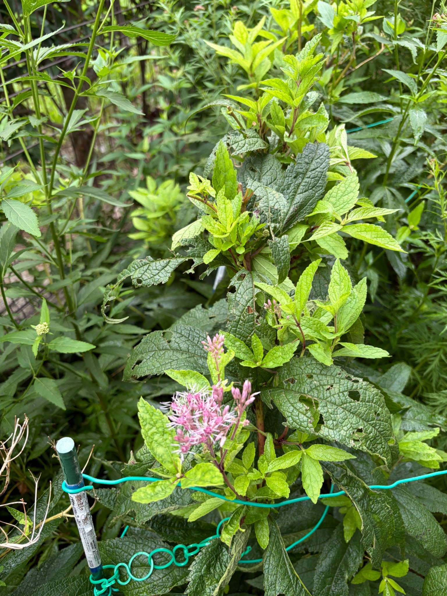

ベイビージョー｜わが家の生育記録
2026年9月23日｜親株の蕾が開花、新しい葉も伸びています
親株の枝先で淡いピンク色の花が開き、葉の間からは新しい枝葉が伸びています。
親株に淡いピンク色の花
2026年9月23日、ベイビージョーの親株に花が咲いているのを確認しました。写真の手前には、淡いピンク色の花が開いた花房が見えます。花房にはまだ開いていない蕾も残っており、咲いた花とこれから咲く蕾が一緒に見られます。

9月14日の記録では、親株の新しい葉と、枝先についたピンク色の蕾を撮影しました。今回の写真では、親株で花が開いた様子を残すことができました。花房全体が一度に咲きそろうのではなく、蕾を残しながら少しずつ開花が進んでいます。
葉の間から伸びる新しい枝葉
花だけでなく、株の上部や葉の間から伸びる明るい緑色の葉も目を引きます。以前からある濃い緑色の大きな葉と並ぶことで、新しい枝葉が伸びている場所がよく分かります。大きな葉には穴や欠けも見られますが、その周囲では新しい葉が広がっています。
9月14日は、挿し木株の初めての花と、親株についた蕾を記録しました。今回は親株の開花と、その周りで伸びる新しい枝葉を、9月23日の変化として残します。
0 件